11.自動経路生成（駐車経路生成）
Autowareによる自動経路生成（駐車経路生成）方法を以下に示す。
作業前の情報を初期化するため、念のためAutowareを再起動する。
※設定詳細は、「Autoware 自動運転ソフトウェア入門」P164参照
事前準備
事前に以下の準備をしておくこと。
準備1
velodyneモジュールの変更
「Autoware 自動運転ソフトウェア入門」では、「points2vscan」機能により「/scan」トピックを生成しているが、本書では、velodyneの機能により「/scan」トピックをパブリッシュする手順とする。ただし、一部velodyneモジュールの変更を行う。
※北陽Liderセンサーと併用すると制御が不安定になるので、排他使用を推奨。北陽Liderセンサーによる「/scan」トピックについての説明については省略する。（ name_space 、その他駆使すれば可能と思うが煩雑になるので...）
変更概要
velodyneモジュールは、pointsトピックの他に「/scan」トピックもパブリッシュしている。ただし、pointsトピック名が「velodyne_points」の場合に限り、「/scan」トピックに有効データがセットされる仕様である。Autowareでは、固定のトピック名「points_raw」で機能を実現している部分もあり、現状では設定が煩雑化するため、トピック名「points_raw」の場合に「/scan」トピックに有効データをセットするよう変更する。
（ただし、北陽Liderセンサーを利用する場合は、この限りではない。）
ソース修正
| 項目 | 内容 | 備考 |
|---|---|---|
| 格納フォルダ | ~/catkin_ws/src/velodyne/velodyne_laserscan/src/ | - |
| ファイル名 | velodyne_laserscan.cpp | 57行目 |
void VelodyneLaserScan::connectCb()
{
boost::lock_guard<boost::mutex> lock(connect_mutex_);
if (!pub_.getNumSubscribers())
{
sub_.shutdown();
}
else if (!sub_)
{
sub_ = nh_.subscribe("velodyne_points", 10, &VelodyneLaserScan::recvCallback, this);
↑ここを ｢velodyne_points｣ → ｢points_raw｣に変更
}
}
ビルド
ソース修正後ビルドを行う。
準備2
Autoware関連launchファイルの変更
AGV本体（車体）の緒元を設定する。
| 項目 | 内容 | 備考 |
|---|---|---|
| ファイル名 | astar_navi.launch | - |
| 格納先 | ~/Autoware/ros/install/freespace_planner/share/freespace_planner/launch | 1.11.1 |
| 〃 | ~/Autoware/ros/src/computing/planning/mission/packages/freespace_planner/launch | 1.10.0 |
変更内容（設定内容については現在調整中（バージョンごとで内容が異なる））
※複数行コメントや日本語を使用すると、取込みエラーになることがあるので使用しないこと
<launch>
<!-- Navi configurations -->
<arg name="costmap_topic" default="semantics/costmap_generator/occupancy_grid" />
<arg name="waypoints_velocity" default="5.0" />
<arg name="update_rate" default="1.0" />
<!-- A* search configurations -->
<arg name="use_back" default="true" />
<arg name="use_potential_heuristic" default="true" />
<arg name="use_wavefront_heuristic" default="false" />
<arg name="time_limit" default="5000.0" />
<arg name="robot_length" default="0.89" /><!-- 車体長さ default:4.5 -->
<arg name="robot_width" default="0.41" /><!-- 車幅 default:1.75 -->
<arg name="robot_base2back" default="1.0" />
<arg name="minimum_turning_radius" default="1.0" /><!-- 最小回転半？直？径 default:6.0 -->
<arg name="theta_size" default="48" /><!-- 経路検索時の角度 -->
<arg name="curve_weight" default="1.2" />
<arg name="reverse_weight" default="2.00" />
<arg name="lateral_goal_range" default="0.5" /><!-- ゴールの許容範囲（横）？(m) default:0.5 -->
<arg name="longitudinal_goal_range" default="0.4" /><!-- ゴールの許容範囲（縦）？(m) default:2.0 -->
<arg name="angle_goal_range" default="6.0" /><!-- ゴールの許容範囲（角度）？(度) default:6.0 -->
<arg name="obstacle_threshold" default="100" />
<arg name="potential_weight" default="10.0" />
<arg name="distance_heuristic_weight" default="1.0" />
<node pkg="freespace_planner" type="astar_navi" name="astar_navi" output="screen">
<remap from="costmap" to="$(arg costmap_topic)" />
<param name="waypoints_velocity" value="$(arg waypoints_velocity)" />
<param name="update_rate" value="$(arg update_rate)" />
<param name="use_back" value="$(arg use_back)" />
<param name="use_potential_heuristic" value="$(arg use_potential_heuristic)" />
<param name="use_wavefront_heuristic" value="$(arg use_wavefront_heuristic)" />
<param name="time_limit" value="$(arg time_limit)" />
<param name="robot_length" value="$(arg robot_length)" />
<param name="robot_width" value="$(arg robot_width)" />
<param name="robot_base2back" value="$(arg robot_base2back)" />
<param name="minimum_turning_radius" value="$(arg minimum_turning_radius)" />
<param name="theta_size" value="$(arg theta_size)" />
<param name="angle_goal_range" value="$(arg angle_goal_range)" />
<param name="curve_weight" value="$(arg curve_weight)" />
<param name="reverse_weight" value="$(arg reverse_weight)" />
<param name="lateral_goal_range" value="$(arg lateral_goal_range)" />
<param name="longitudinal_goal_range" value="$(arg longitudinal_goal_range)" />
<param name="obstacle_threshold" value="$(arg obstacle_threshold)" />
<param name="potential_weight" value="$(arg potential_weight)" />
<param name="distance_heuristic_weight" value="$(arg distance_heuristic_weight)" />
</node>
<!-- Visualization node-->
<node pkg="waypoint_maker" type="waypoint_marker_publisher" name="waypoint_marker_publisher" />
</launch>
準備3
その他、以下の準備をしておくこと。
- velodyne、SMAGVの起動。
- AGVの自己位置推定設定。
コストマップの生成
レーザスキャン情報からコストマップを生成する。
laserscan2costmap項目の設定をする。
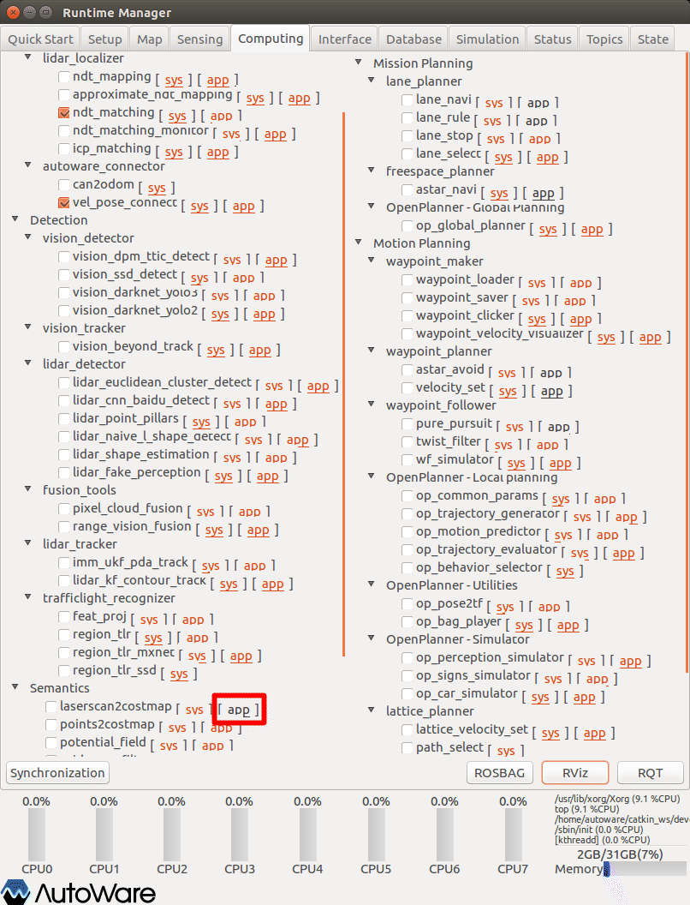
- Runtime Managerの［Computing］タブを選択。
- laserscan2costmap項目［app］押下でパラメタ設定画面を表示する。
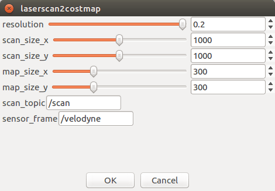
- laserscan2costmapパラメタ項目を適宜設定する。
- ［OK］ボタン押下で前画面に戻る。
| # | 項目名 | 内容 | 単位 | smagv妥当値 |
|---|---|---|---|---|
| 1 | Resolution | 解像度 | 0.05 | |
| 2 | scan_size_x | 1000 | ||
| 3 | scan_size_y | 1000 | ||
| 4 | map_size_x | 500 | ||
| 5 | map_size_y | 500 | ||
| 6 | scan_topic | Laser Scanトピック名 | - | /scan |
| 7 | sensor_frame | センサフレーム名（urdf、TF定義名を設定する） | - | /velodyne（veodyne） /base_2d_laser（北陽） |
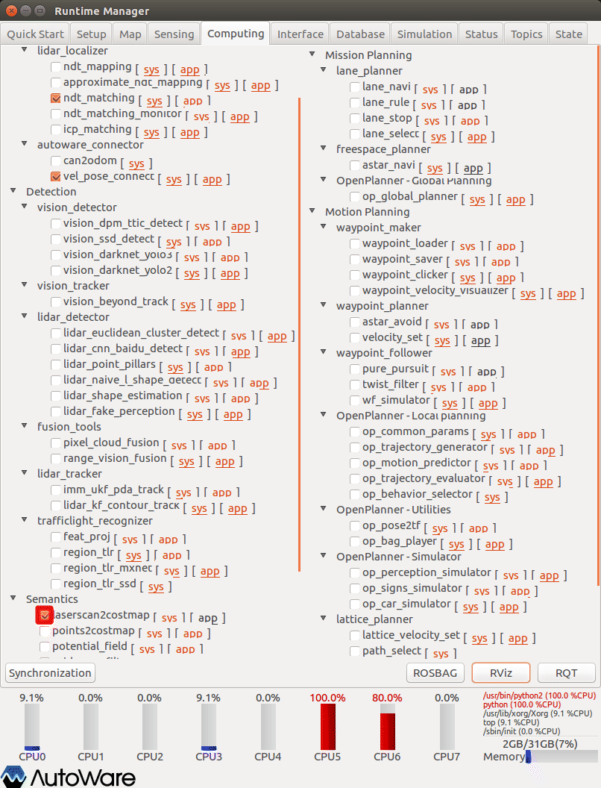
- laserscan2costmap項目チェックBOXをチェックありにする。
RVizの設定
RViz起動後、defaultのRViz設定ファイルを開く。（~/Autoware/ros/src/.config/rviz/default.rviz）
その後、以下topic表示を追加する。
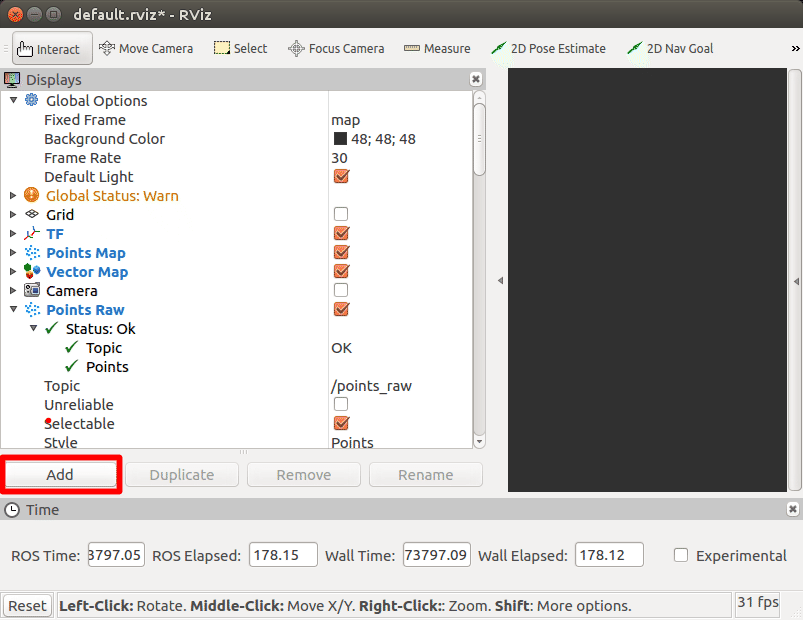
- ［add］押下で追加トピック選択画面を表示する。
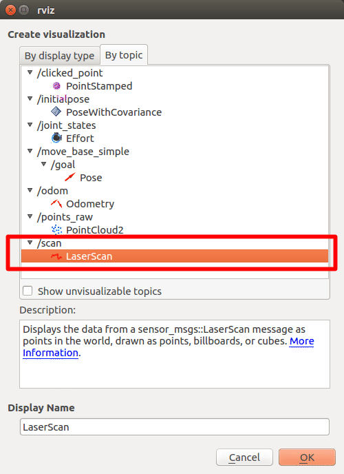
- 追加トピック選択画面の［by topic］タブを選択。
- ［/scan］トピックの［LaserScan］を選択する。
- ［OK］ボタン押下で確定する。
- LaserScan表示がされていることを確認する。（points_rawと表示色が似ているので、適宜調整する）
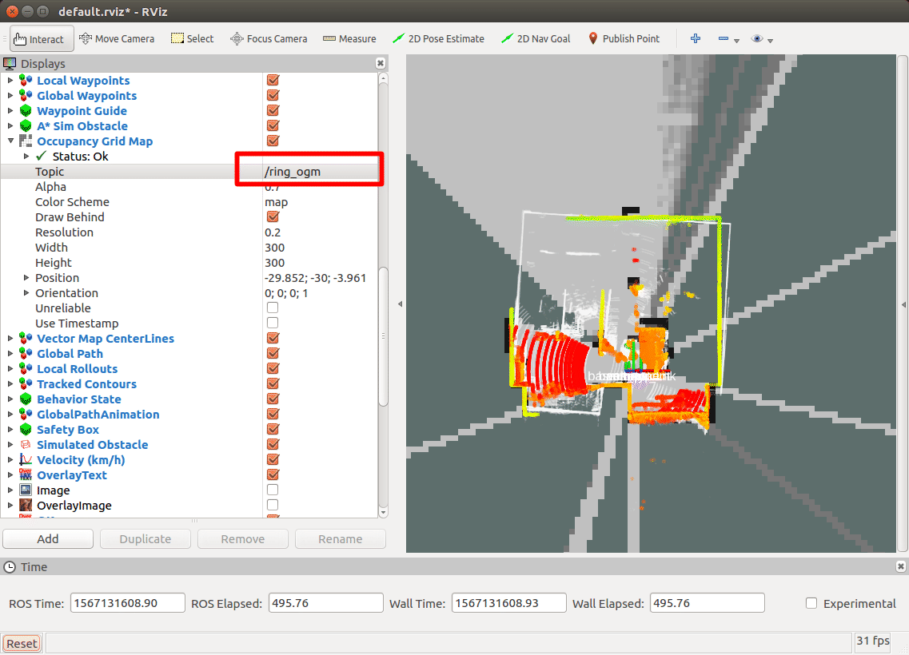
- Occupancy Grid Map項目の表示トピックを［/ring_ogm］に変更する。
- 右フレームにcosmapが表示されることを確認する。（velodyneと北陽Liderを併用していると、costmapを表示しないので、Liderは排他使用にする。）
経路生成
経路を生成するための設定を行う。
astar_navi項目の設定をする。
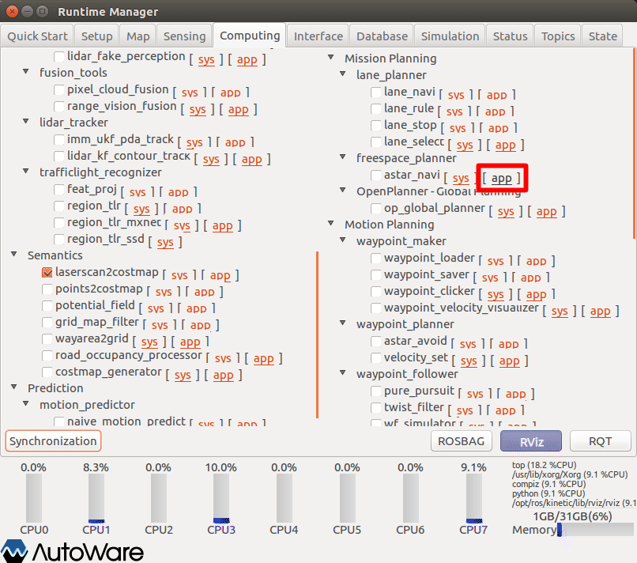
- Runtime Managerの［Computing］タブを選択。
- astar_navi項目［app］押下でパラメタ設定画面を表示する。
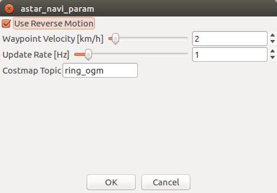
- astar_naviパラメタ項目を適宜設定する。
- ［OK］ボタン押下で前画面に戻る。
| # | 項目名 | 内容 | 単位 | smagv妥当値 |
|---|---|---|---|---|
| 1 | Use Reverse Motion | 車庫入れ時の切り返し経路生成 有無 | - | |
| 2 | Waypoint Velocity | 速度 | km/h | |
| 3 | Update Rate | 更新間隔 | Hz | |
| 4 | costmap topic | costmapのトピック名 | - | ring_ogm |
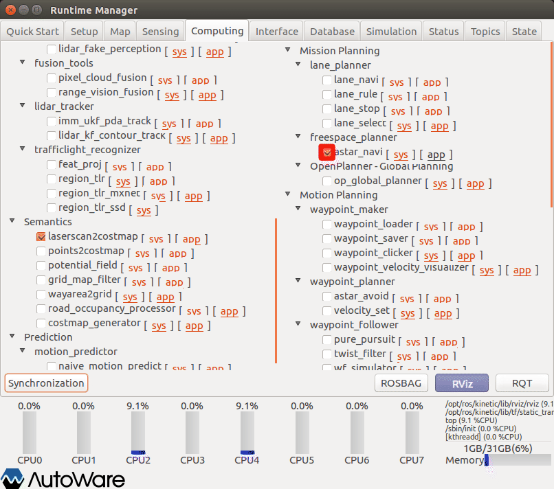
- astar_navi項目チェックBOXをチェックありにする。
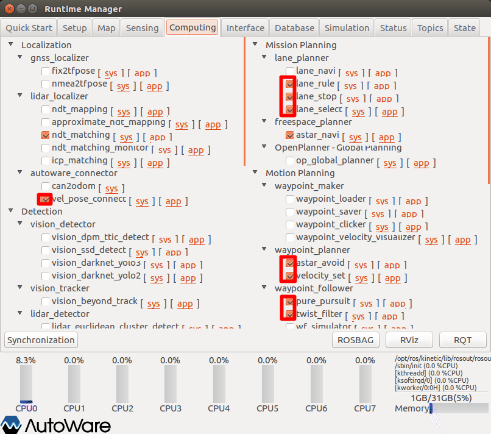
- lane_rule項目チェックBOXをチェックありにする。
- lane_stop項目チェックBOXをチェックありにする。
- lane_select項目チェックBOXをチェックありにする。
- vel_pose_connect項目チェックBOXをチェックありにする。
- aster_avoid項目チェックBOXをチェックありにする。
- velocity_set項目チェックBOXをチェックありにする。
- pure_pursuit項目チェックBOXをチェックありにする。
- twist_filter項目チェックBOXをチェックありにする。
ゴール位置指定
Rviz表示に切り替え、ゴール位置を指定する。
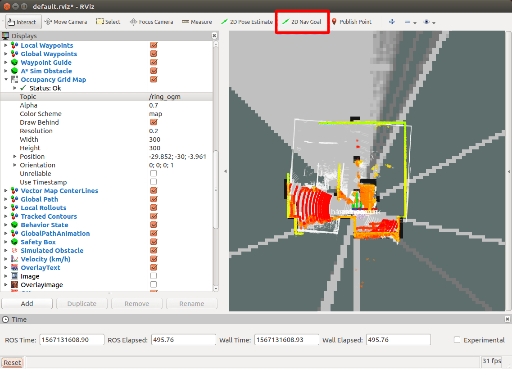
- Rvizツールバーの［2D Nav Goal］に押下する。
- 右フレーム（マップフレーム）にマウスでゴール位置を設定する（カーソルをゴール地点にし、左クリック。左クリックしたままの状態で、マウスを移動し向きを指定する。その後、マウス左ボタンを離す。）
- waypointが、地図上に表示されることを確認する。（agv本体を移動しないと表示しない場合があるのでその場合は、少し移動してみる）
SMAGVの自動運転切り替え
Bluetoothゲームパッドの［Y］ボタン押下で自動走行モードに切り替え、AGVが自動走行することを確認する。
その他
- 特になし